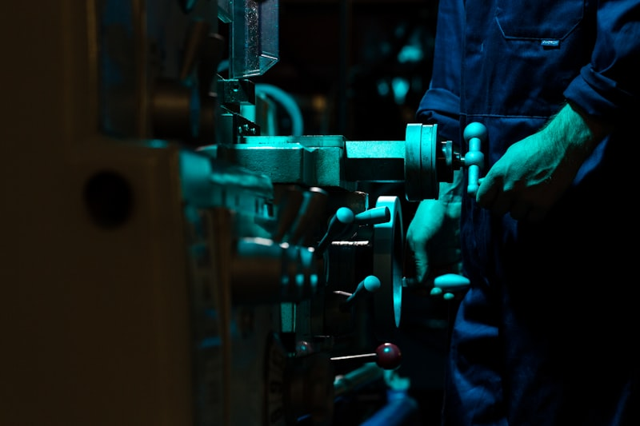

专为玻璃与显示模组设计。贴胶精度突破至±0.075mm，配备恒压控制功能，节拍时间快至80秒�?

传统人工组装方式耗时长、效率低下，难以满足大规模生产需求�?/p>
人工操作易受疲劳和技能差异影响，产品一致性和精度难以保持稳定�?/p>
产品切换时需要重新调整工装夹具，耗费大量停机时间�?/p>
大幅提升生产效率，降低人工成本�?/p>
设备精度稳定可靠，产品一致性高�?/p>
缩短换型时间，提高设备利用率�?/p>
精密制造，匠心工艺，品质保障�?/p>
* 设备具体配置与外形尺寸可能因客户车间实际布局而有非标定制化调整，最终以我司工程图纸为准�?/p>